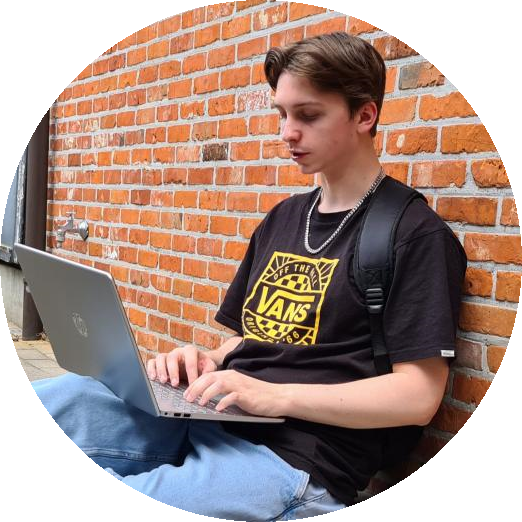

Robbe Sas
Mijn naam is Robbe Sas. Ik ben 19 jaar en woon in Turnhout samen met mijn broer en mijn ouders. Op het moment ben ik 2e jaars student Cloud and Cybersecurity op Thomas More in Geel. Doorheen de dag hou ik me graag bezig met het spelen van gitaar, fitness en het bijleren van nieuwe vaardigheden. Ik focus me op het heden en laat de toekomst op me afkomen.
Ik ben heel mijn leven al geïnteresseerd geweest in hoe heel de digitale wereld werkt. Daarom wist ik ook welke richting ik uit wou zonder hier al te veel over na te denken. Ik heb deze keuze dus puur op gevoel gemaakt. Ik heb de keuzerichting Cloud and Cybersecurity op deze zelfde manier gekozen.
Ik hoop naar de toekomst toe in deze vakrichting dan ook een job te kunnen scoren dat ik met plezier kan uitoefenen, waar ik nieuwe vaardigheden kan leren en nieuwe mensen kan ontmoeten.